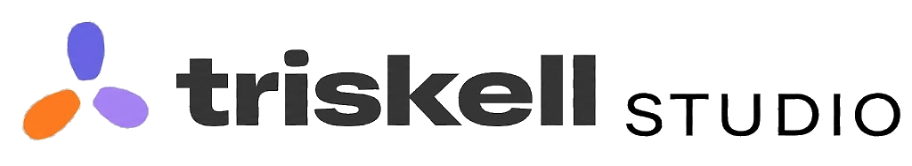

La Suite des Héros
11 outils pour ranger, renommer, compresser et sécuriser tes fichiers.
Disponible
Triskell Table RondeLa Table Ronde réunit la Suite des Héros, DéliNote, Le Studio PDF et tous les futurs outils Triskell Studio dans une seule application. Tu te connectes avec ton email, et tu fais entrer chaque compagnon en un clic.
Pas de spyware. Pas de pub. Pas de paiement caché.
La Table Ronde est gratuite. Tu paies uniquement les compagnons que tu invites.
11 outils pour ranger, renommer, compresser et sécuriser tes fichiers.
DisponibleNotes synchronisées, markdown natif, recherche instantanée.
DisponibleFusion, split, OCR, signature — tout pour tes PDF.
BientôtL'outil signature de Triskell Studio.
BientôtClient mail nouvelle génération. Gratuit.
BientôtChaque nouveau compagnon Triskell apparaît à ta Table, automatiquement.
Une seule appli Windows légère. Pas de compte requis pour l'installer.
Code à 6 chiffres reçu par mail. Pas de mot de passe à retenir.
Chaque outil que tu as adoubé (Suite des Héros, DéliNote…) s'installe à ta Table en un clic.
La Table et chaque compagnon se mettent à jour automatiquement en arrière-plan.
macOS et Linux à l'étude.